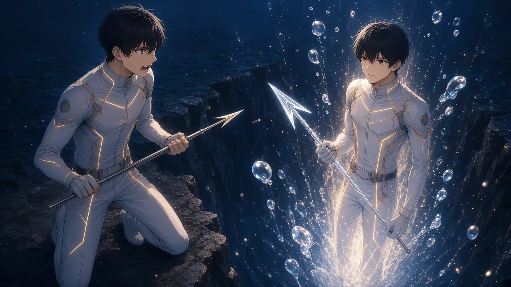

眠る前、浅瀬モードの隅に、見慣れた数字が出ていた。
【実質化率 1.4％】
0.8％だったはずだ。いつ1％を越えたのか、僕は覚えていなかった。
覚えていないことが、少しだけ怖かった。
＊
【深度 -2,900m】
岩棚の縁で、千歳さんが籠手を外した。
その手のひらに、小さな殻が載っていた。巻き貝を半分に割ったような、乳白色の殻。内側が、真珠みたいに光っている。
「持っていきな」
【耐圧殻：PRS +70】
「これ、千歳さんのじゃ」
「昔のさ。もう要らない」
千歳さんは、僕の胸の泡殻に、殻をそっと押しあてた。殻は膜に溶けて、見えなくなった。
【PRS 220 → 290】
「ここから先は、自分の足でも立てるようにね」
この深さに要るのは、290。足りないぶんは、ゼロ。
圧損の表示が消えた。輪の外に出ても、泡殻は鳴らなかった。
視界の隅の時計は、【1:12】。ノアが落ちるまで、まだ二時間以上ある。カゲロウは、まだ大阪弁だった。
「ほな、いよいよ沈都層やな」
＊
そのとき、下から誰かが上がってきた。
白い潜水服。黒い髪。片手に、硝子の穂先の銛。
見覚えがありすぎた。
毎朝、洗面所の鏡で見ている顔だった。
頭上に、名札が浮かんでいる。
【ルカ】
にじんでいない。欠けてもいない。くっきりとした、正しい二文字。
僕の頭上には、今も【？？？】が浮かんでいる。
「――その名前、もらったよ」
声まで、僕の声だった。
最初の夜に、深いところから聞こえた声。あれは、この口から出ていたのだ。
夜の海に沈んでいった「ル」と「カ」の泡が、体を持って、僕の前に立っていた。
【ルカ HP 1,520】
僕と、同じ数字だった。
＊
「ノア、下がって！」
僕が叫んだのと、同時だった。
「ノア、前へ！」
同じ声が、反対のことを叫んだ。
ノアの足が止まる。どちらを聞けばいいのか、分からない顔で。
「千歳さん、右！」
「千歳さん、左！」
千歳さんの盾が、一瞬、迷った。
その隙間に、偽物の銛が滑りこんだ。
「267」
赤い数字が、僕の上で弾けた。
突き返す。
「268」「251」
【ルカ HP 1,001】
「ルカくん、今戻す！」
ノアのランタンが光った。灯守の灯火。温かい光の帯が、まっすぐに伸びて――
偽物の胸に吸いこまれた。
「2,071」
【ルカ HP 1,520】
満タンだった。
「え……」
ノアの顔から、色が引いた。
灯火は、名前で相手を選ぶ。ノアが心の中で「ルカ」と呼んだから、光は【ルカ】の名札へ飛んだ。
カゲロウの泡身代わりも、同じだった。「ルカを守れ」と放った泡は、偽物の前でふくらんで、僕の銛を受けとめた。
「あかん、全部向こうに行く！」
仲間の手が、全部、僕の名前のほうへ流れていく。
僕の名前は、もう僕のところにはなかった。
「どっちが、ルカだい」
千歳さんが、低く言った。責める声ではなかった。本当に、分からないのだ。
同じ顔。同じ声。あの夜の僕と同じ、硝子の銛。同じHP。違うのは、頭の上の文字だけ。そして、正しい文字を持っているのは、向こうだった。
僕は、答えられなかった。
僕が僕だと、どうやって証明すればいいのだろう。名札は【？？？】で、声は写されて、数字まで同じなのに。
足元が、すっと冷えた。泡殻の外の水が、内側まで染みてくるような寒さだった。
「267」
また、赤い数字。
偽物は、仲間の名前も呼んだ。ウタを、「案内役#07」と。
ウタの体の光が、ふっと揺らいだ。歌が、途切れる。
「やめろ」
僕の声で、偽物が笑った。
＊
「267」
三度目の赤い数字を見たとき、何かが引っかかった。
267。267。267。
三回とも、同じだった。
僕の攻撃は、毎回ゆらぐ。268、251。式に乱数が入っているからだ。0.9倍から1.1倍。数字が毎回少しずつ違うから、突くたびに、次の数字を待つ楽しみがある。
偽物の数字は、ゆらがない。
「この数字は、綺麗すぎる」
声に出していた。
四度目。
「267」
僕のHPは、残り452。あと二発で、僕が割れる。
数字は、全部見えていた。だから、分かった。
あいつは、僕の数字を写している。STRも、DEFも、FRG 21まで。けれど、乱数だけは写せない。運は、写せない。
そして、もう一つ。
あいつの銛は、いつも同じ拍で来る。四拍目の頭。一度も、ずれない。
ずれないものは、読める。
「ウタ」
僕は、偽物ではなく、ウタのほうを向いた。
「歌って。僕じゃなくて、ウタの拍で動く。みんなも、僕の声じゃなくて、歌を聞いて」
ウタが、顔を上げた。
偽物が、口をひらいた。
「ウタ――」
同じ声。同じ名前。
けれど、ウタは振り向かなかった。
「ちがう」
ウタは、まっすぐ僕を見ていた。

「その呼び方、知らない」
六つの音が、群青に戻ってきた。
＊
上がって、少し下がって、また上がる。
偽物の銛が、四拍目の頭に来る。僕は、ウタの拍の裏へ、半歩だけずれた。
穂先が、僕の泡殻のすぐ横を通りすぎる。
空振り。
「283」
突き返した数字が、金色に近い朱で弾けた。
千歳さんの盾が、歌の拍子で鳴る。ノアは、ランタンを下ろした。灯火を、もう誰にも飛ばさない。カゲロウの泡が、歌の休符に合わせて、偽物の視界をふさぐ。
僕の声は、使わなかった。偽物が写せるのは、僕の声だけだから。
「247」「290」「259」「276」
数字が、ゆらぐ。毎回、違う。
その違いが、うれしかった。
前の仕事で、何度も言われたことがある。乱数なんて、ないほうが公平だと。毎回同じ数字が出れば、誰も損をしない、と。
僕は、いつも反対した。毎回同じなら、それはもう、遊びではなく作業だ。次の数字が分からないから、人は銛を引く。ゆらぎは、生きている手ざわりなのだ。
その手ざわりが、今、僕を僕にしていた。
【ルカ HP 165】
偽物が、こちらを見た。
同じ顔。けれど、その目には何も映っていなかった。
「ルカ」
ウタが、呼んだ。
僕は振り向いた。
偽物は、振り向かなかった。
名札に書かれた名前を、自分のことだと分かっていない。文字列を持っているだけで、呼ばれたことが、一度もないのだ。
呼ばれた記憶は、名札には書いていない。
僕は銛を引いた。ウタの旋律が、いちばん高い音へ上がっていく。その頂点で。
「CRITICAL 417」
金色の縁どりの数字が、偽物の胸で、大きく弾けた。
【ルカ HP 0】
＊
偽物の体が、ほどけはじめた。
足先から、泡になっていく。白い潜水服も、黒い髪も、硝子の銛も。
最後に残った唇が、僕の耳もとまで流れてきた。
「名前は、もうこっちのものだ」
僕の声で、偽物はささやいた。
「……君は、終わらせ方を知っている」
意味を訊く前に、唇は泡になった。
ぱちん、と。
頭上の【ルカ】の二文字が、群青の上へ昇っていく。消えたのではない。どこかへ、持ち帰られていく。
僕の名札は、【？？？】のままだった。
【LEVEL UP!】Lv 21 → Lv 22
PRS 290 → 300
ファンファーレが鳴った。
その音を、僕はいつもより長く聞いていた。誰にも写せない、僕の数字の音。
？？？ Lv 22 ジョブ：銛撃士
HP 1,605 LUX 160 STR 96
MAG 22 DEF 70 SPD 104
LCK 31 PRS 300 FRG 21
「ルカ」
ウタが、もう一度呼んだ。
「うん」
返事をした。それだけで、足りた。
「……ごめんね、ルカくん」
ノアが、ランタンを胸に抱いたまま言った。
「名前で、選んじゃった。いちばん近くにいたのに」
「ノアのせいじゃないよ。あいつは、そういうふうに作られてた」
「次は、間違えない」
ノアは、僕の頭上の【？？？】を見上げた。それから、小さく笑った。
「空白のほうを、呼べばいいんだもんね」
＊
僕たちは、岩棚から降りた。
【深度 -3,000m／沈都層】
要求PRSは300。僕のPRSも、300。圧損は、ゼロ。
境を越えた瞬間、海の音が変わった。浅瀬からずっと鳴っていた、高く澄んだ泡の音が遠のいて、低い弦のような響きが、足元から満ちてくる。
光も、変わった。
真珠白と翠が、背中のほうへ退いていく。かわりに、琥珀の灯りが、夜の底から立ちのぼってきた。
眼下に、街があった。
石畳の通り。崩れかけたアーケード。窓という窓に、琥珀の灯りがともっている。誰もいないのに、灯りだけが、まだ誰かを待っているみたいに。
街の真ん中に、時計塔のある聖堂が立っていた。緑に光る珊瑚が、尖塔のてっぺんまで絡みついている。
時計の針は、十一時十四分で止まっていた。
23:14。
澪さんの荷物が届いた時刻と、同じだった。
ウタが、僕の袖をつかんだ。その指が、小さく震えていた。
怖がっているのではなかった。
眼下の沈んだ街を見て、ウタが小さく言った。
「……ただいま？」